Keep improving with AI
Make courses, quizzes and flashcards with any chatbot or your own API key. Study them in short lessons, and let the app bring back what you missed before you forget it.
- 10question types, from multiple choice to drag and drop
- 3languages: English, Oʻzbekcha, Русский
- Offlineeverything is stored on the phone
- Your keysClaude, Gemini, OpenAI and compatible
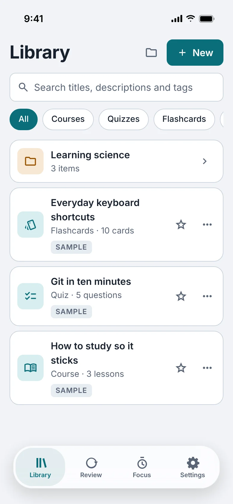
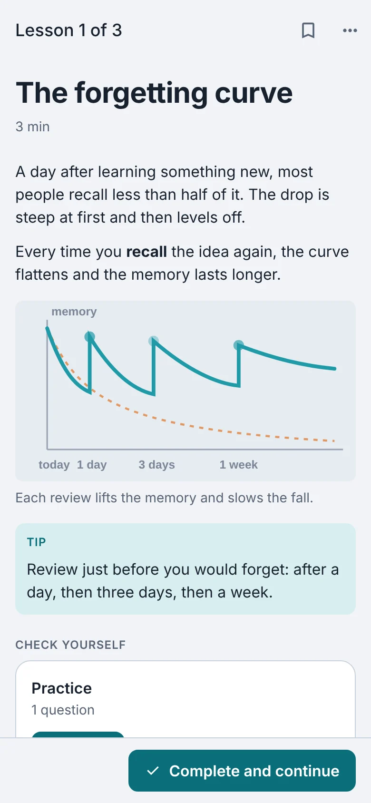
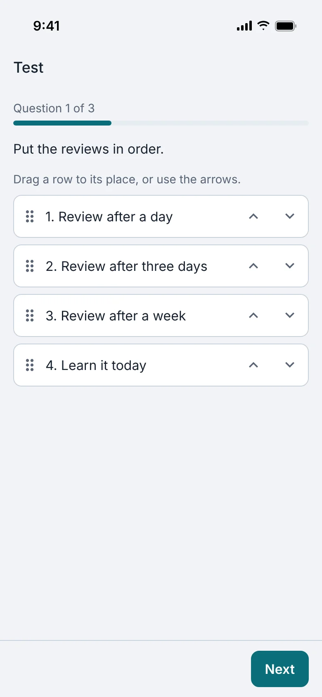
A course in minutes, written by the AI you already use
Describe a topic, who it is for and, if you like, paste your own notes. KIWA turns that into a precise request for any chatbot.
- Describe itPick a course, lesson, quiz or flashcards. Leave the level and size to the AI, or set them yourself.
- Ask any chatbotCopy the prompt or share it as a file, and paste it into ChatGPT, Gemini, Claude or any other assistant.
- Import the replyPaste the answer back. Small slips are fixed for you, and anything else comes with a ready-made correction prompt.
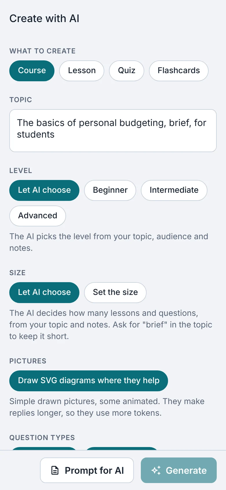
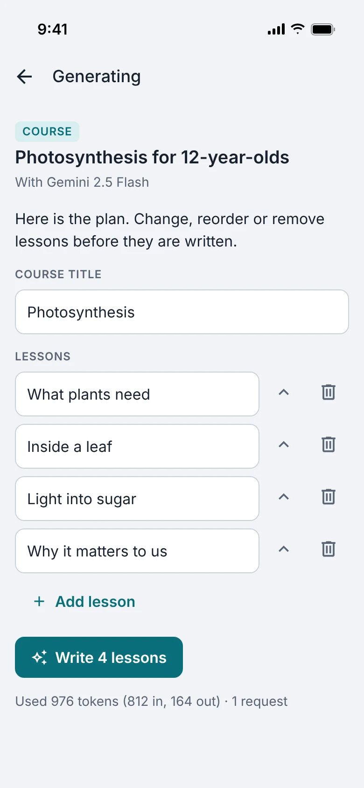
Or generate it right here with your own key
Add Claude, Gemini or any OpenAI-compatible service: OpenAI, Grok, OpenRouter, DeepSeek, Mistral or a local Ollama server.
- Every model your key reaches, sorted by what it is for, with Free tier or Paid labels and what it can read.
- Check the outline first. Rename, reorder or remove lessons before anything long is written.
- Limits handled for you. A per-minute limit is waited out; a daily limit hands the rest of the course to another model.
- Keeps working in the background, and picks up where it stopped if the phone closes the app.
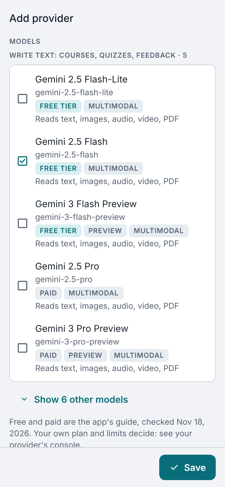
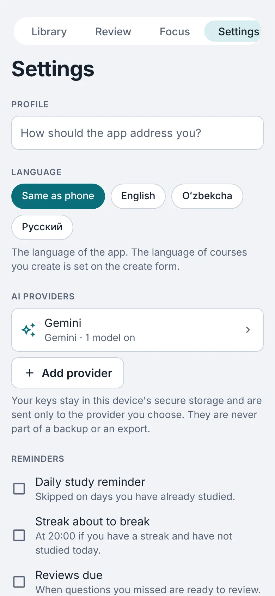
Short lessons, then real practice
Lessons hold text, code, tips and pictures the AI draws as SVG, animated when motion explains the idea. Each one ends with questions on that lesson only.
- Single choice
- Multiple choice
- True or false
- Short answer
- Fill in the gaps
- Essay
- Flashcards
- Matching pairs
- Put in order
- Sort into groups
- Practice, test or exam. Feedback after every answer, or a score at the end with a pass mark and an optional timer.
- Check with AI grades essays and written answers, and Explain deeper shows why an answer was wrong.
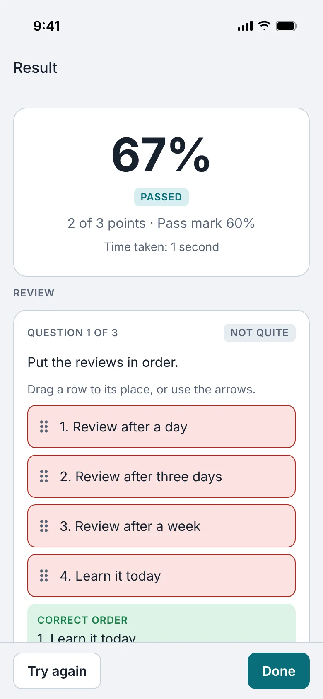
What you miss comes back just before you forget it
Missed questions and the flashcards you study join a review queue. Each correct answer pushes the next review further out.
Miss it again and it returns in 10 minutes.
- Focus rounds. A Pomodoro timer and a focus view that shows only the lesson and keeps the screen on.
- Gentle reminders that skip the days you have already studied, plus streaks and weekly progress.
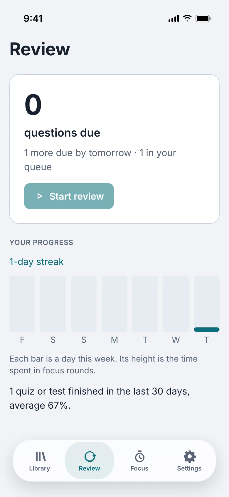
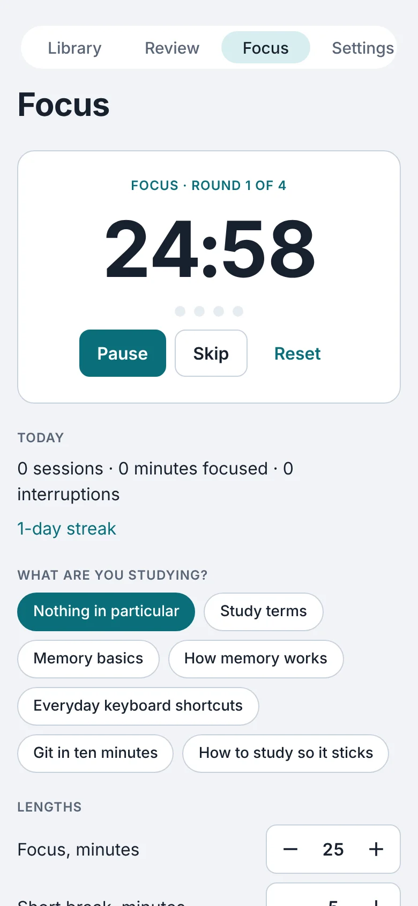
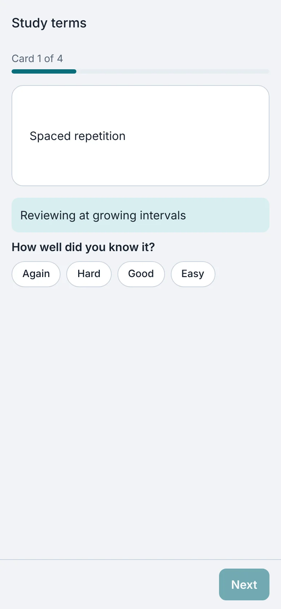
Your library, your way
Courses, quizzes and flashcards live side by side, and can be edited on the phone down to a single question.
- Groups to sort everything by subject, exported and imported as one file.
- Import and export any course, lesson, quiz or deck, or back up everything at once.
- Marks that matter: favorites, completed lessons, bookmarks, and a trash with undo.
- Three languages. The app follows your phone, or you pick English, Oʻzbekcha or Русский.
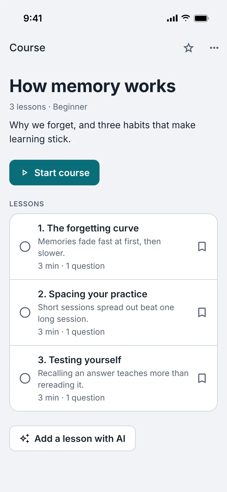
Every screen
Real screenshots of the app. They follow the language you pick above and your light or dark setting.
Your studies stay on your phone
Content, results and settings are stored on the device. Nothing leaves it unless you share it.
API keys sit in the phone's secure storage and go only to the provider you chose. Never in a backup or export.
Prompt for AI needs no key at all, and every course can be written or edited by hand.